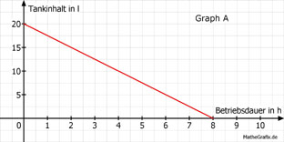
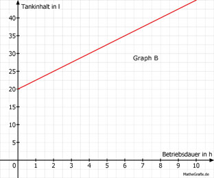

Lineare Funktionen Aufgabe 33 Eine Motorpumpe hat einen 20 l Tank. Im Betrieb verbraucht sie 2,5 l/Stunde. a) Welcher Graph zeigt diesen Sachverhalt? b) Wie lautet seine Funktionsgleichung für die Abhängigkeit des Tankinhalts I von der Betriebsdauer t? c) Nach wie viel Stunden sind noch 4 l im Tank? a)   Der Tankinhalt wird immer kleiner, je länger die Pumpe betrieben wird. Deswegen muss der Graph eine fallende Gerade sein. Somit ist A richtig. b) m = -2,5 l/h , negativ wegen Abnahme des Tankinhalts. I = 20 - 2,5 * t c) 4 = 20 - 2,5t |+2,5t 2,5t + 4 = 20 |-4 2,5t = 16 |:2,5 t = 6,4 h